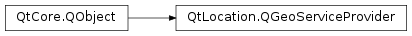

QGeoServiceProvider¶
Synopsis¶
Functions¶
- def
error() - def
errorString() - def
geocodingFeatures() - def
geocodingManager() - def
mappingFeatures() - def
navigationFeatures() - def
placeManager() - def
placesFeatures() - def
routingFeatures() - def
routingManager() - def
setAllowExperimental(allow) - def
setLocale(locale) - def
setParameters(parameters)
Static functions¶
- def
availableServiceProviders()
Detailed Description¶
The
PySide2.QtLocation.QGeoServiceProviderclass aggregates access to services which provide geographical information.The Maps and Navigation API allows people to access various kinds of geographical information, including functionality to perform geocoding, routing and the display of maps. The
PySide2.QtLocation.QGeoServiceProvideraggregates the access to a set of these services that are provided by a single vendor.It is possible to mix and match service providers for the various domains, so that a geocoding manager from one service provider can be used with a geographic routing manager from another service provider.
This is not recommended unless the client is able to verify that the data provided by the different services are compatible, as differences in the underlying data sets could cause serious incongruences between the services.
Subclasses of
PySide2.QtLocation.QGeoServiceProviderguarantee that the different services that they provide are interoperable.At this point there are two GeoServices plugins packaged with Qt. They are accessible using their provider names:
- “mapbox” -> Mapbox service
- “here” -> HERE Services
- “osm” -> OpenStreetMap Services
- “esri” -> ESRI Services
Each service provider must follow a naming convention for their service specific parameter names/keys. They use the provider name as prefix for all their parameter names. For example, the HERE service provider requires the
here.app_idparameter. When a provider is loaded only those parameters are passed on whose parameter names start with the provider name. This avoids the sharing sensitive parameters such as confidentialtokenorapp_idparameters with other plugins.Please check the GeoServices plugin specific documentation to obtain a complete list of the available parameter names/keys and values.
-
class
PySide2.QtLocation.QGeoServiceProvider(providerName[, parameters=QVariantMap()[, allowExperimental=false]])¶ Parameters: - parameters –
PySide2.QtCore.QVariantMap - providerName – unicode
- allowExperimental –
PySide2.QtCore.bool
Constructs a
PySide2.QtLocation.QGeoServiceProviderwhose backend has the nameproviderName, using the providedparameters.If multiple plugins have the same
providerName, the plugin with the highest reported providerVersion() will be used.If
allowExperimentalis true then plugins marked as experimental may be used. By default experimental plugins are not considered.If no plugin matching
providerNamewas able to be loaded thenPySide2.QtLocation.QGeoServiceProvider.error()andPySide2.QtLocation.QGeoServiceProvider.errorString()will provide details about why this is the case.Note
Before the list of
parametersis passed on to the to-be-loaded provider plugin, the list is filtered to avoid the sharing of plugin specific parameters with unrelated provider plugins. Plugin specific parameter keys must be prefixed with the provider name (e.g.here.app_id).- parameters –
-
PySide2.QtLocation.QGeoServiceProvider.Error¶ Describes an error related to the loading and setup of a service provider plugin.
Constant Description QGeoServiceProvider.NoError No error has occurred. QGeoServiceProvider.NotSupportedError The plugin does not support this functionality. QGeoServiceProvider.UnknownParameterError The plugin did not recognize one of the parameters it was given. QGeoServiceProvider.MissingRequiredParameterError The plugin did not find one of the parameters it was expecting. QGeoServiceProvider.ConnectionError The plugin could not connect to its backend service or database.
-
PySide2.QtLocation.QGeoServiceProvider.RoutingFeature¶ Describes the routing features supported by the geo service provider.
Constant Description QGeoServiceProvider.NoRoutingFeatures No routing features are supported. QGeoServiceProvider.OnlineRoutingFeature Online routing is supported. QGeoServiceProvider.OfflineRoutingFeature Offline routing is supported. QGeoServiceProvider.LocalizedRoutingFeature Supports returning routes with localized addresses and instructions. QGeoServiceProvider.RouteUpdatesFeature Updating an existing route based on the current position is supported. QGeoServiceProvider.AlternativeRoutesFeature Supports returning alternative routes. QGeoServiceProvider.ExcludeAreasRoutingFeature Supports specifying a areas which the returned route must not cross. QGeoServiceProvider.AnyRoutingFeatures Matches a geo service provider that provides any routing features.
-
PySide2.QtLocation.QGeoServiceProvider.GeocodingFeature¶ Describes the geocoding features supported by the geo service provider.
Constant Description QGeoServiceProvider.NoGeocodingFeatures No geocoding features are supported. QGeoServiceProvider.OnlineGeocodingFeature Online geocoding is supported. QGeoServiceProvider.OfflineGeocodingFeature Offline geocoding is supported. QGeoServiceProvider.ReverseGeocodingFeature Reverse geocoding is supported. QGeoServiceProvider.LocalizedGeocodingFeature Supports returning geocoding results with localized addresses. QGeoServiceProvider.AnyGeocodingFeatures Matches a geo service provider that provides any geocoding features.
-
PySide2.QtLocation.QGeoServiceProvider.MappingFeature¶ Describes the mapping features supported by the geo service provider.
Constant Description QGeoServiceProvider.NoMappingFeatures No mapping features are supported. QGeoServiceProvider.OnlineMappingFeature Online mapping is supported. QGeoServiceProvider.OfflineMappingFeature Offline mapping is supported. QGeoServiceProvider.LocalizedMappingFeature Supports returning localized map data. QGeoServiceProvider.AnyMappingFeatures Matches a geo service provider that provides any mapping features.
-
PySide2.QtLocation.QGeoServiceProvider.PlacesFeature¶ Describes the places features supported by the geo service provider.
Constant Description QGeoServiceProvider.NoPlacesFeatures No places features are supported. QGeoServiceProvider.OnlinePlacesFeature Online places is supported. QGeoServiceProvider.OfflinePlacesFeature Offline places is supported. QGeoServiceProvider.SavePlaceFeature Saving places is supported. QGeoServiceProvider.RemovePlaceFeature Removing or deleting places is supported. QGeoServiceProvider.SaveCategoryFeature Saving categories is supported. QGeoServiceProvider.RemoveCategoryFeature Removing or deleting categories is supported. QGeoServiceProvider.PlaceRecommendationsFeature Searching for recommended places similar to another place is supported. QGeoServiceProvider.SearchSuggestionsFeature Search suggestions is supported. QGeoServiceProvider.LocalizedPlacesFeature Supports returning localized place data. QGeoServiceProvider.NotificationsFeature Notifications of place and category changes is supported. QGeoServiceProvider.PlaceMatchingFeature Supports matching places from two different geo service providers. QGeoServiceProvider.AnyPlacesFeatures Matches a geo service provider that provides any places features.
Describes the navigation features supported by the geo service provider.
Constant Description QGeoServiceProvider.NoNavigationFeatures No navigation features are supported. QGeoServiceProvider.OnlineNavigationFeature Online navigation is supported. QGeoServiceProvider.OfflineNavigationFeature Offline navigation is supported. QGeoServiceProvider.AnyNavigationFeatures Matches a geo service provider that provides any navigation features.
-
static
PySide2.QtLocation.QGeoServiceProvider.availableServiceProviders()¶ Return type: list of strings Returns a list of names of the available service providers, for use with the
PySide2.QtLocation.QGeoServiceProviderconstructors.
-
PySide2.QtLocation.QGeoServiceProvider.error()¶ Return type: PySide2.QtLocation.QGeoServiceProvider.ErrorReturns an error code describing the error which occurred during the last operation that was performed by this class.
-
PySide2.QtLocation.QGeoServiceProvider.errorString()¶ Return type: unicode Returns a string describing the error which occurred during the last operation that was performed by this class.
-
PySide2.QtLocation.QGeoServiceProvider.geocodingFeatures()¶ Return type: PySide2.QtLocation.QGeoServiceProvider.GeocodingFeaturesReturns the geocoding features supported by the geo service provider.
-
PySide2.QtLocation.QGeoServiceProvider.geocodingManager()¶ Return type: PySide2.QtLocation.QGeoCodingManagerReturns the
PySide2.QtLocation.QGeoCodingManagermade available by the service provider.This function will return 0 if the service provider does not provide any geocoding services.
This function will attempt to construct a
PySide2.QtLocation.QGeoCodingManagerinstance when it is called for the first time. If the attempt is successful thePySide2.QtLocation.QGeoCodingManagerwill be cached, otherwise each call of this function will attempt to construct aPySide2.QtLocation.QGeoCodingManagerinstance until the construction is successful.The
PySide2.QtLocation.QGeoCodingManageris owned by thisPySide2.QtLocation.QGeoServiceProviderand should not be deleted separately. Users should assume that deleting thePySide2.QtLocation.QGeoServiceProviderrenders the pointer returned by this method invalid.After this function has been called,
PySide2.QtLocation.QGeoServiceProvider.error()andPySide2.QtLocation.QGeoServiceProvider.errorString()will report any errors which occurred during the construction of thePySide2.QtLocation.QGeoCodingManager.
-
PySide2.QtLocation.QGeoServiceProvider.mappingFeatures()¶ Return type: PySide2.QtLocation.QGeoServiceProvider.MappingFeaturesReturns the mapping features supported by the geo service provider.
Return type: PySide2.QtLocation.QGeoServiceProvider.NavigationFeaturesReturns the navigation features supported by the geo service provider.
-
PySide2.QtLocation.QGeoServiceProvider.placeManager()¶ Return type: PySide2.QtLocation.QPlaceManagerReturns the
PySide2.QtLocation.QPlaceManagermade available by the service provider.This function will attempt to construct a
PySide2.QtLocation.QPlaceManagerinstance when it is called for the first time. If the attempt is successful thePySide2.QtLocation.QPlaceManagerwill be cached, otherwise each call of this function will attempt to construct aPySide2.QtLocation.QPlaceinstance until the construction is successful.The QGeoPlaceManager is owned by this
PySide2.QtLocation.QGeoServiceProviderand should not be deleted separately. Users should assume that deleting thePySide2.QtLocation.QGeoServiceProviderrenders the pointer returned by this method invalid.After this function has been called,
PySide2.QtLocation.QGeoServiceProvider.error()andPySide2.QtLocation.QGeoServiceProvider.errorString()will report any errors which occurred during the construction of thePySide2.QtLocation.QPlaceManager.
-
PySide2.QtLocation.QGeoServiceProvider.placesFeatures()¶ Return type: PySide2.QtLocation.QGeoServiceProvider.PlacesFeaturesReturns the places features supported by the geo service provider.
-
PySide2.QtLocation.QGeoServiceProvider.routingFeatures()¶ Return type: PySide2.QtLocation.QGeoServiceProvider.RoutingFeaturesReturns the routing features supported by the geo service provider.
-
PySide2.QtLocation.QGeoServiceProvider.routingManager()¶ Return type: PySide2.QtLocation.QGeoRoutingManagerReturns the
PySide2.QtLocation.QGeoRoutingManagermade available by the service provider.This function will return 0 if the service provider does not provide any geographic routing services.
This function will attempt to construct a
PySide2.QtLocation.QGeoRoutingManagerinstance when it is called for the first time. If the attempt is successful thePySide2.QtLocation.QGeoRoutingManagerwill be cached, otherwise each call of this function will attempt to construct aPySide2.QtLocation.QGeoRoutingManagerinstance until the construction is successful.The
PySide2.QtLocation.QGeoRoutingManageris owned by thisPySide2.QtLocation.QGeoServiceProviderand should not be deleted separately. Users should assume that deleting thePySide2.QtLocation.QGeoServiceProviderrenders the pointer returned by this method invalid.After this function has been called,
PySide2.QtLocation.QGeoServiceProvider.error()andPySide2.QtLocation.QGeoServiceProvider.errorString()will report any errors which occurred during the construction of thePySide2.QtLocation.QGeoRoutingManager.
-
PySide2.QtLocation.QGeoServiceProvider.setAllowExperimental(allow)¶ Parameters: allow – PySide2.QtCore.boolSets whether experimental plugins are considered when locating the correct plugin library for this service provider to
allow.Important: this will destroy any existing managers held by this service provider instance. You should be sure not to attempt to use any pointers that you have previously retrieved after calling this method.
-
PySide2.QtLocation.QGeoServiceProvider.setLocale(locale)¶ Parameters: locale – PySide2.QtCore.QLocaleSets the locale used by this service provider to
locale. If the relevant features (seeLocalizedMappingFeatureetc), this will change the languages, units and other locale-specific attributes of the provider’s data.
-
PySide2.QtLocation.QGeoServiceProvider.setParameters(parameters)¶ Parameters: parameters – PySide2.QtCore.QVariantMapSets the parameters used to construct individual manager classes for this service provider to
parameters.Before the list of
parametersis passed on to the to-be-loaded service provider, the list is filtered to avoid the sharing of provider specific parameters with unrelated service providers. Provider specific parameter keys must be prefixed with the provider name (e.g.here.app_id).Important: this will destroy any existing managers held by this service provider instance. You should be sure not to attempt to use any pointers that you have previously retrieved after calling this method.
© 2018 The Qt Company Ltd. Documentation contributions included herein are the copyrights of their respective owners. The documentation provided herein is licensed under the terms of the GNU Free Documentation License version 1.3 as published by the Free Software Foundation. Qt and respective logos are trademarks of The Qt Company Ltd. in Finland and/or other countries worldwide. All other trademarks are property of their respective owners.